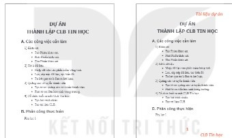
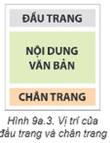
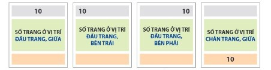
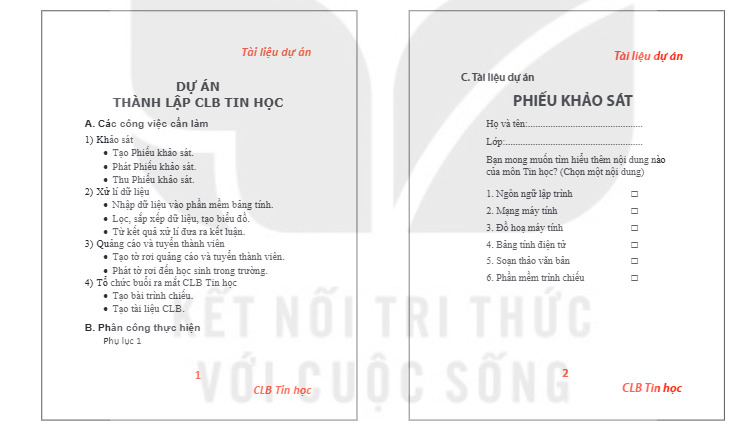
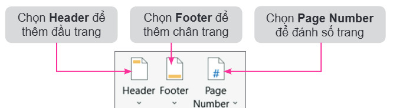
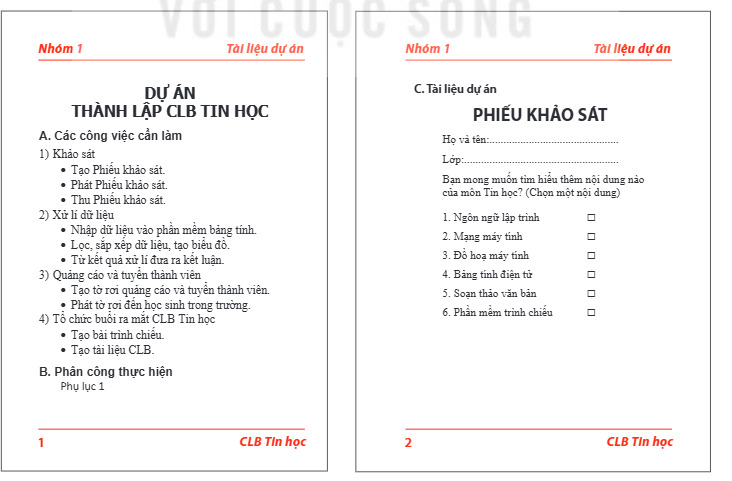

Dành cho giáo viên
Theo dõi lớp
| Học sinh / Nhóm | Đã nộp | Cập nhật |
|---|
Bước 1
1 Khởi động
Khám phá Hình ảnh khởi động
Trò chuyện Cùng An, Minh và Khoa
Đoạn trò chuyện gợi mở (không có trong SGK)
Minh: Sách giáo khoa trang nào cũng có số trang ở dưới, tên bài ở trên.
An: Văn bản tớ soạn thì không có, in ra nhiều trang dễ bị lẫn.
Khoa: Đó là đầu trang và chân trang. Tạo một lần là xuất hiện ở mọi trang!
An: Văn bản tớ soạn thì không có, in ra nhiều trang dễ bị lẫn.
Khoa: Đó là đầu trang và chân trang. Tạo một lần là xuất hiện ở mọi trang!
Khởi động So sánh hai trang văn bản
Em hãy quan sát Hình 9a.1, Hình 9a.2 và tìm ra những phần khác nhau trong hai trang văn bản. Trong các cuốn sách, truyện em đã đọc có các thành phần văn bản đó không? Tác dụng của chúng là gì?

Ghi bài Khởi động
Sau khi thầy cô chốt, em chép nội dung dưới đây vào vở.
Bước 2 · Hình thành kiến thức mới
2.1 Đầu trang và chân trang
Hoạt động 1 Đầu trang và chân trang cho em biết gì?
Trong trang văn bản ở Hình 9a.2, phần văn bản màu cam có nội dung “Tài liệu dự án” và “CLB Tin học” cho em biết điều gì?
Đọc hiểu Đầu trang (Header) và chân trang (Footer)

Đọc mục 1 (SGK trang 42–43). Đầu trang (Header) và chân trang (Footer) lần lượt là phần trên cùng (phần lề trên) và dưới cùng (phần lề dưới) của văn bản. Chúng là các phần riêng biệt với văn bản chính (Hình 9a.3) và thường được sử dụng để chứa chú thích, số trang, tên văn bản, tên tác giả,… Đầu trang và chân trang cũng có thể chứa hình ảnh hay hình đồ hoạ. Các thông tin đặt trong phần đầu trang và chân trang sẽ tự động xuất hiện ở tất cả các trang. Nhờ vậy, em có thể cố định một số thông tin cần xuyên suốt cả văn bản. Đầu trang và chân trang thường chứa thông tin ngắn gọn về văn bản giúp phân loại, kiểm soát các trang trong văn bản. Ngoài ra thông tin ở đầu trang và chân trang còn giúp trang văn bản chuyên nghiệp và đẹp hơn nhờ cách sắp xếp thông tin hay các hình ảnh trang trí. Ví dụ: trang văn bản trong Hình 9a.2 có thông tin trong phần đầu trang và chân trang cho người đọc biết tên của văn bản là “Tài liệu dự án”, trang hiện tại là trang số “1” và văn bản thuộc về “CLB Tin học”.
Thử trên mô phỏng: bấm Header ▾ → Blank, gõ một dòng chữ — dòng chữ tự xuất hiện ở cả hai trang.
Thử trên mô phỏng: bấm Header ▾ → Blank, gõ một dòng chữ — dòng chữ tự xuất hiện ở cả hai trang.
Câu hỏi SGK trang 43
Em hãy chọn những phương án đúng trong các phương án sau.
Ghi bài 1. Đầu trang và chân trang
Sau khi thầy cô chốt, em chép nội dung dưới đây vào vở.
Bước 2 · Hình thành kiến thức mới
2.2 Đánh số trang
Hoạt động 2 Số trang trong văn bản
Trong các cuốn sách giáo khoa, sách văn học, truyện mà em đọc, em có nhìn thấy số trang của sách không? Số trang sách thường nằm ở đâu?
Đọc mục 2 (SGK trang 43). Các tài liệu dạng văn bản, nhất là các văn bản dài thường đánh số trang để người đọc dễ theo dõi. Phần mềm soạn thảo văn bản có chức năng đánh số trang tự động cho văn bản. Số trang thường được đặt ở đầu trang hoặc chân trang. Em có thể lựa chọn đặt số trang ở vị trí bên trái, bên phải hoặc giữa.
Thử đặt số trang ở đủ 4 vị trí như Hình 9a.4 bằng Page Number ▾ (Top of Page: đầu trang, Bottom of Page: chân trang).
Thử đặt số trang ở đủ 4 vị trí như Hình 9a.4 bằng Page Number ▾ (Top of Page: đầu trang, Bottom of Page: chân trang).

Câu hỏi SGK trang 44
Ghi bài 2. Đánh số trang
Sau khi thầy cô chốt, em chép nội dung dưới đây vào vở.
Bước 2 · Thực hành
2.3 Thực hành: Đánh số trang, thêm đầu trang và chân trang
Nhiệm vụ Văn bản CLBTinhoc.docx
Em hãy mở tệp CLBTinhoc.docx mà em đã tạo ở Bài 8a (phần Luyện tập), bổ sung thêm nội dung, đánh số trang, thêm đầu trang và chân trang cho văn bản theo mẫu trong Hình 9a.5.

Hướng dẫn (SGK minh hoạ bằng Microsoft Word):
- Mở tệp CLBTinhoc.docx.
- Chọn Insert, trong nhóm lệnh Header & Footer, nháy chuột chọn lệnh tương ứng (Hình 9a.6).
- Sau khi chọn Page Number, chọn Bottom of Page / Plain Number 2 để đánh số trang vào vị trí giữa, bên dưới trang văn bản.
- Sau khi chọn Header, chọn Blank rồi nhập nội dung “Tài liệu dự án” vào ô [Type here], căn phải và tạo chữ in nghiêng, màu cam.
- Sau khi chọn Footer, chọn Blank rồi nhập nội dung “CLB Tin học” vào ô [Type here], căn phải và tạo chữ in nghiêng, màu cam.
- Nháy chuột chọn lệnh Close Header and Footer để hoàn thành việc đánh số trang, thêm đầu trang và chân trang.
- Lưu văn bản.

Làm thử trên mô phỏng trước khi làm trên máy tính:
Ghi bài 3. Thực hành
Sau khi thầy cô chốt, em chép nội dung dưới đây vào vở.
Bước 3
3 Luyện tập
Luyện tập Tên nhóm và số trang bên trái
Em hãy mở tệp CLBTinhoc.docx và thực hiện các yêu cầu sau đây: a) Bổ sung thêm tên người hoặc tên nhóm thực hiện dự án vào đầu trang. b) Đặt lại số trang vào vị trí bên trái của chân trang.
Mô phỏng dưới đây bắt đầu từ kết quả của phần Thực hành. Gợi ý: nháy đúp vào đầu trang để sửa; muốn có chữ ở cả bên trái và bên phải, dùng mẫu Blank (Three Columns).
Mô phỏng dưới đây bắt đầu từ kết quả của phần Thực hành. Gợi ý: nháy đúp vào đầu trang để sửa; muốn có chữ ở cả bên trái và bên phải, dùng mẫu Blank (Three Columns).
Ghi bài Luyện tập
Sau khi thầy cô chốt, em chép nội dung dưới đây vào vở.
Bước 4
4 Vận dụng
Vận dụng Đường thẳng ở đầu trang, chân trang
Em hãy tìm hiểu cách thêm hình ảnh, hình đồ hoạ vào chân trang và đầu trang rồi bổ sung vào đầu trang và chân trang trong tệp CLBTinhoc.docx một đường thẳng theo mẫu như Hình 9a.7.

Trên mô phỏng: khi đang sửa đầu trang (hoặc chân trang), bấm Shapes: đường thẳng.
Ghi bài Vận dụng
Sau khi thầy cô chốt, em chép nội dung dưới đây vào vở.